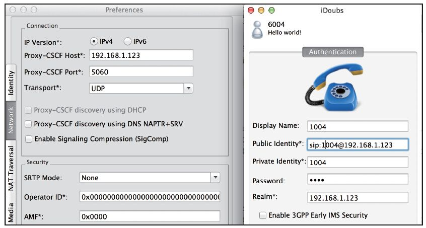

14.1 使用Doubango客户端连接
Doubango [1] 是一个不错的开源框架，它跟电信业务走得比较近，主要集中在以3GPP、TISPAN、Packet Cabel、WiMax、GSMA、RCS-e、IETF等为标准的NGN技术、音视频处理技术、云计算以及WebRTC技术等中。该框架使用ANSI C编写，具有很好的可移植性。在很多平台上都有基于Doubango的客户端实现，如Windows上的Boghe、Mac上的iDoubs以及Android系统上的IMSDroid等。
但是，我们这里单独介绍Doubango并不是因为其强大，而是因为它总是倾向于把简单的东西搞得异常复杂。
我们在第3章曾介绍过，最简单的SIP注册一共就需要三个选项：服务器地址（Realm）、用户名（Username）和密码（Password），但在Doubango中，就没这么简单了。如果你要注册，就得填一大堆的东西，并且格式相当严格和专业，这令好多初学者都摸不着头脑。
下面我们以Mac平台上的iDoubs为例，讲一下它往FreeSWITCH上注册的方法。图14-1是笔者使用Mac版的iDoubs注册时的参数设置，在其他平台上可以参考使用。

图14-1 iDoubs注册设置
要进行注册，首先，要到“Preferences”->“Network”中设置Proxy-CSCF-Host和Proxy-CSCF-Port。这是代理服务器的地址和端口号，相当于其他软件高级设置中的Outbound Proxy。这个地址的意思是，如果Doubango注册时，会将注册的包发到这个地址。而它实际请求域（或简单认为是注册的地址）将是下一步我们将要设置的Realm的地址。但由于我们的FreeSWITCH只有一个地址，因而这里就填FreeSWITCH服务器的IP地址。
接下来，要填写注册相关的参数。其中，Display Name跟其他软件中的一样，是可以随便填的。Public Identity是IMS里的概念，相当于你的公有SIP地址，就是说，别人呼叫你的时候要呼叫这个地址。注意这个地址的格式，其中的“sip:”是不能省略的。Private Identity是你的私有账号，这个在认证的时候要使用，相当于其他软件中的Username或Auth-User（会出现在SIP消息的Authentication头域中）。Password就是密码。Realm是服务器的域（或IP地址）。
总之，基于Doubango的所有默认应用都倾向于把填写注册信息弄的异常复杂 [2] 。不过，如果顺利过了这一关，大家也能学到不少的知识。尤其是在下一节的对接IMS系统时我们还会看到更复杂一些的参数。
[1] 参见http://doubango.org/。
[2] 实际上，其他类似的的SIP客户端软件也都需要这些信息，但它们都会要求填入最少的信息，如果可能的话，会自动计算这些值，或者有合理的默认值（如FreeSWITCH中的网关设置）。Doubango官方提供的各种应用在这一点上都不是很人性化。